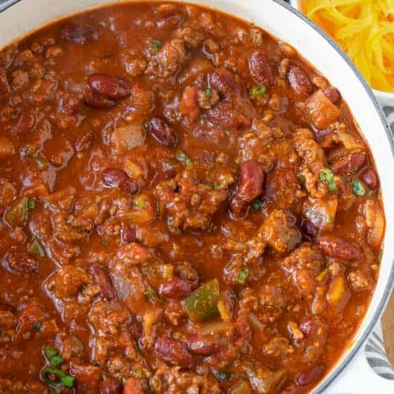

Mom's Chili Recipe

This is the famous chili recipe that I was raised on as a kid. My mom would always make a big batch of this and use it for many purposes like chili and cheese
enchiladas or just a plain bowl of chili with some crackers. This chili recipe is sure to make you feel super cozy and make you feel like you're back at home!
Ingredients
- 2lbs of ground beef
- One large onion
- 5 cans of black label ranch style beans
- One can of diced tomatoes
- Two packs of McCormick chili seasoning
- Garlic powder
- Chili Powder
- Cumin
- Salt
- Pepper
Directions
- Dice up onion and add with ground beef to a pot with olive oil on medium heat with salt and pepper
- Cook that for five minutes stirring consistently
- turn heat down to low and add the beans, diced tomatoes, and dry seasonings
- Let simmer in the pot for 30-45 minutes and serve!